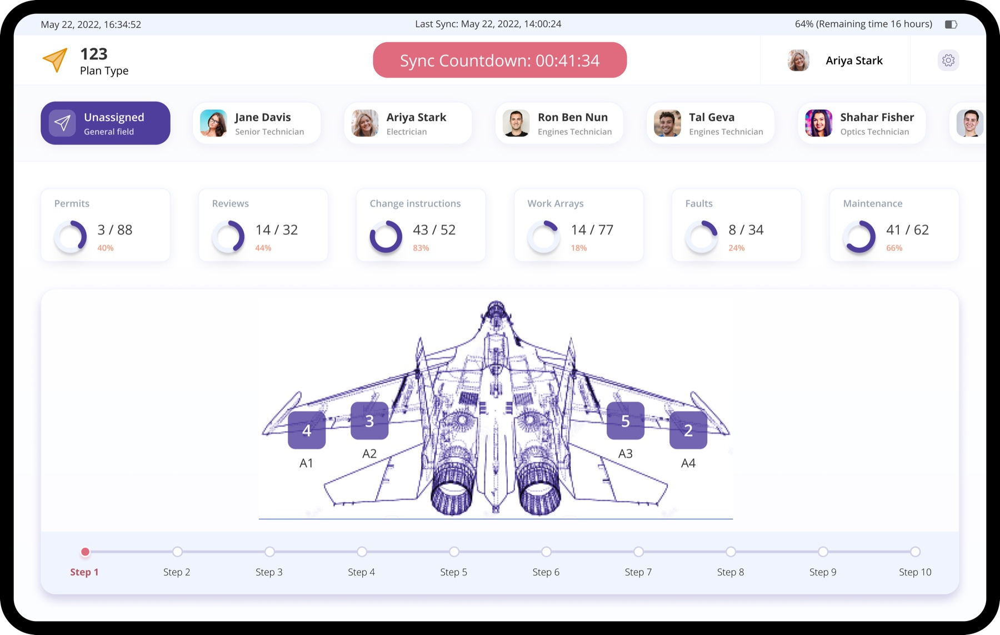

Paperwork that outweighed the work
The paperwork had outgrown the job. Sole designer on the tablet app that replaced it.

Overview
Every step of an aircraft maintenance job gets signed off, twice, once on paper and once on a screen. By the time a technician had finished documenting a job, the reporting had cost more than the job. I was the only designer on the project that replaced it.
- Role
- Product designer and UX researcher. Sole designer.
- Client
- Webiks, for the Israeli Air Force
- Platform
- Hardened tablet
- Dates
- January to September 2018
Background
Air Force personnel maintain aircraft against procedures that run to dozens of steps per activity, held in printed guides. Technicians, commanders and air crew all touch the same job. Every executed step has to be documented across multiple systems, in both hard and soft copy, then reviewed and signed off by a commanding officer.
Air crew depend on this work being right. The place it happens is loud and dirty and nobody has time, which is also why the tablets are the armoured kind.
The principle
At times the overhead of reporting and review exceeded the effort involved in the actual maintenance work.
Process
I led this as a single product designer and owned the full lifecycle.
- Interviews with maintenance experts and field technicians.
- Identified the key personas and their usage patterns.
- Visited Air Force bases to see the work environment and its conditions firsthand.
- Researched the constraints of the chosen tablet platform before designing to it.
- Took mockups back into the field for user research and feedback.
- Stayed with the engineering teams through build, giving guidance and review.
What shipped
One app, on a dedicated hardened tablet built for the environment, replacing a workflow that had been split across paper and several systems.
- The end-to-end workflow lives in a single system.
- Guides, outstanding jobs and maintenance history are all reachable from the job.
- Typing is designed out wherever possible. Barcode scanning and preset values replace free text, which is where the human errors were.
Founding a design function that was told no →